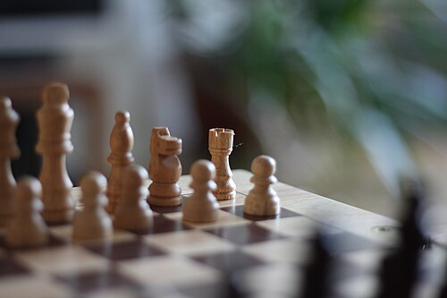
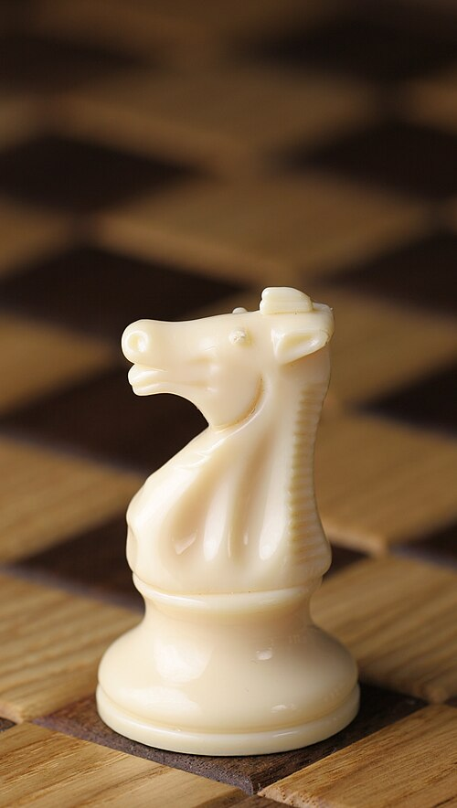

Содержание: Что такое шахматы | Почему мне нравятся шахматы | Кнопки
Что такое шахматы

Шахматы - это настольная игра для двух игроков. Играют на доске 8 на 8 клеток. У каждого игрока есть 16 фигур: белые или черные. Белые ходят первыми.
Цель игры - поставить мат королю соперника. Это значит, что король находится под ударом и не может никуда уйти.
В шахматах нет случайностей, все зависит только от игроков. Поэтому шахматы считаются не только игрой, но и видом спорта.
Почему мне нравятся шахматы

Мне нравится, что каждая партия получается разной. Нужно думать на несколько ходов вперед и угадывать, что сделает соперник.
Чем полезны шахматы
- развивают логику
- тренируют память
- учат быть внимательным
- учат спокойно относиться к проигрышу
Где можно поиграть онлайн
Кнопки
Цвет фона:
Дата: